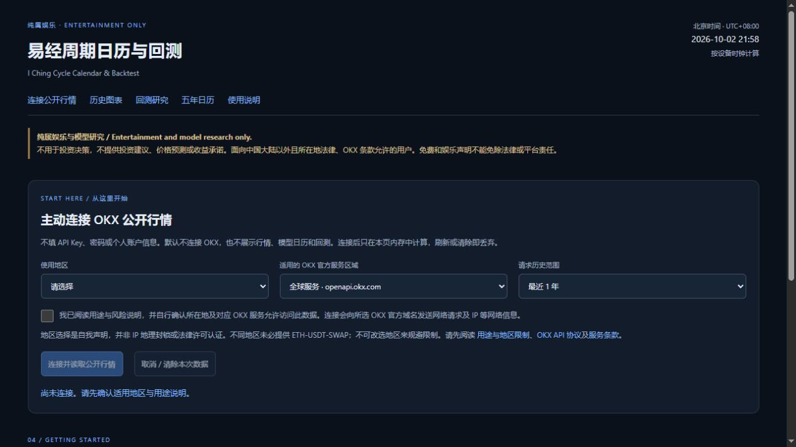
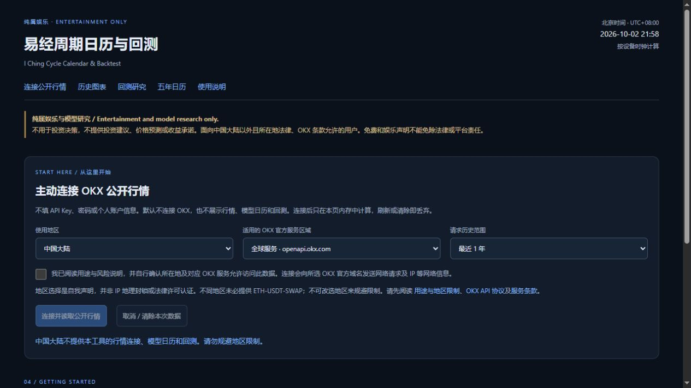
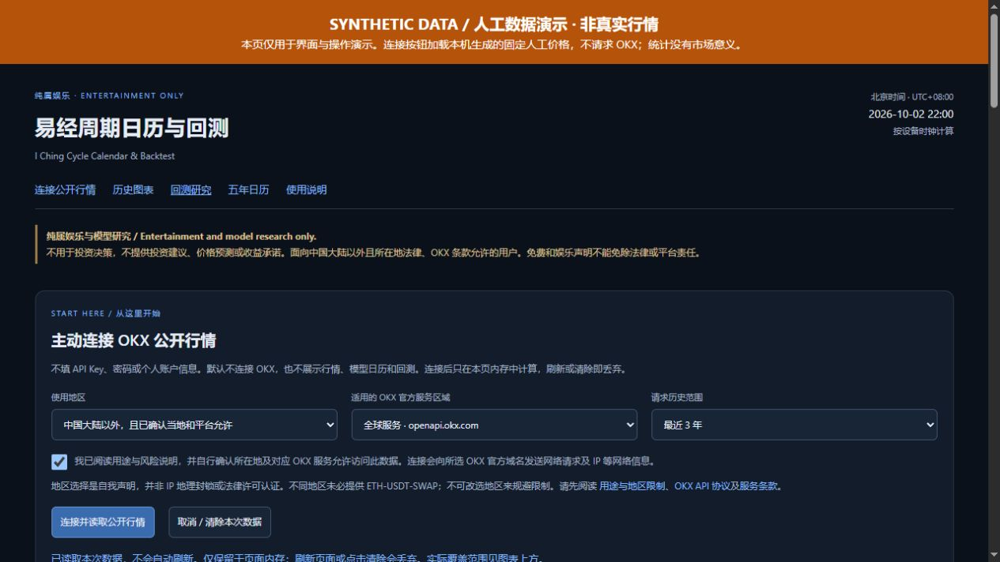

纯属娱乐与模型研究，不用于投资决策。免费，无返佣。
1. 打开后应该看到什么

默认页只显示用途、地区与连接说明。不会自动请求 OKX，不预装真实行情，也不会自动给出当前方向、回测结果或日历。无需在页面输入账户、密码或 API 密钥。
手机、平板和电脑都用浏览器打开同一网页。界面主要为中文，中英文文档辅助阅读；无需 Python、Node.js 或 Git。
2. 本人确认地区和使用资格
先阅读页面说明与使用边界，再根据真实情况作出地区和用途声明。

在“使用地区”如实选择。只有“中国大陆以外，且已确认当地和平台允许”，并由本人确认已读说明后，才可以主动连接。“中国大陆”“其他受限地区 / 尚未确认”和“请选择”均不开放连接。
- 未作出地区选择时不能连接。
- 中国大陆及其他受限地区不能使用数据连接功能。
- 选择其他地区不等于通过法律或 OKX 资格审核；仍需本人确认符合当地规定与 OKX 条件。
- 地区选择是自声明，不使用 IP 封锁或法律认证。请不要用代理或虚假声明绕过限制。
“免费”“娱乐”和“免密”都不是第三方数据授权。没有把握是否可以使用时，请停止，不要连接。
3. 主动连接公开行情
只在有使用资格、理解用途与数据条件后，按以下步骤由本人操作：
- 在“适用的 OKX 官方服务区域”选择本人适用的服务：全球服务、美国 / 澳大利亚或欧洲经济区。不能为解决连接失败而换成不适用的区域，不同服务也未必提供 ETH-USDT-SWAP。
- 在“请求历史范围”选择“最近 90 天”“最近 1 年”或“最近 3 年”，默认最近 1 年。该选项是请求目标，不保证取得完整范围。
- 本人阅读用途、风险及官方条款，仅在如实确认符合条件时勾选页面声明。
- 点“连接并读取公开行情”。加载中可点“取消 / 清除本次数据”终止请求。
浏览器向所选 OKX 官方域名直接发送只读 GET 请求。免密端点不需要你在本页输入密钥，不登录账户、不读取私人仓位、不下单。
加载完成后，先看页面标注的本次数据范围、K 线数量和截止时间。没有固定的旧版快照覆盖范围，也不保证最新行情已完整取得。网络、地区限制、CORS 或其他错误导致连接失败时，会停止，不换代理、不用旧行情或合成数据填充结果。
本项目不持续自动拉取行情。每次请求由用户主动发起；刷新页面后需本人重新检查条件并主动连接。
4. 连接成功后阅读界面
数据请求成功后才显示图表和时间日历；回测结果还需另点“运行回测”。页面日期按北京时间 UTC+08:00 显示，当前时刻由设备时钟换算。日历卡片使用“模型正向（假设）”“模型反向（假设）”标签，只用于解释固定规则。
图表仍可选择“图1 / 日线范围”“图2范围”“未来信号”，使用“重绘图表”或“展开日线与最近 2H 图表”。图表范围和回测日期分别设置。2H 是 2 小时 K 线：价格使用该根收盘值，横轴按开始时间标注。未来公式信号没有未来真实价格。
两套口径分别看
| 回测口径 | 假设统计方法 |
|---|---|
| 方向日历 · 中点切换基准 | 红高带中点对应假设空方向，绿深带中点对应假设多方向。向上对齐到首根开始时间不早于中点的 2H K 线，以该根收盘价计算入场，到下一相反事件的收盘价计算退出。起点前的假设持仓不带入。 |
| 原 Bias · 固定持有统计 | 每根 2H K 线开始时算 Bias，高于 +0.1 为假设多方向，低于 −0.1 为假设空方向，中间及边界不产生样本。以该根收盘价比较 2、6、12、24、72、168 小时后的收盘价。 |
原 Bias 图红色偏多、绿色偏空；日历中点规则红高带对应空、绿深带对应多。两套红绿含义与结果不能混算。这些方向只是娱乐模型标签，不用于投资决策。
5. 合成图只用来学会读结果

本图使用合成数据，不是 OKX 行情，不对应真实市场表现。 它只说明结果区如何阅读，公开应用不会自动载入这份文档演示数据。请不要把它当作可复现的真实收益或产品自带行情。
连接后的回测操作是在“回测口径”选择方法，按实际加载范围填写“起始日期（北京时间）”“结束日期（含）”和“单边成本（bps）”，再点“运行回测”。改变日期或成本后重新运行。可用数据不足时可能没有完成样本。
成本参数不收费
1 bps = 0.01%。填写 5 bps 表示模型假设的单边手续费与滑点合计为 0.05%；完成往返扣 0.10%，未完成中点段只扣已发生的假设入场成本。默认 0 复现毛收益统计。这里的成本输入不会扣款。
统计不包含资金费、杠杆、保证金或强平，也不模拟实际成交。空方向线性收益甚至可能低于 −100%，不能理解为账户能承受并完成该段交易。
结果表怎么看
| 项目 | 含义 |
|---|---|
| 已完成样本 / 样本数 | 有可验证入场与退出价格、实际进入这项假设统计的数量。 |
| 扣成本胜率 | 扣假设成本后收益严格大于零的完成样本比例；零收益不算胜利。 |
| 单样本平均 / 扣成本平均 | 扣成本收益的算术平均，可能被少数极端样本拉动。 |
| 单样本中位数 / 扣成本中位数 | 将收益排序后的中间水平。 |
| 毛收益 / 平均毛收益 | 尚未扣模型成本的方向收益或其平均值。 |
| 未完成 · 快照估值 | 中点段尚未完成退出，按截止范围内最后可用收盘价估值，不计入完成样本汇总。 |
| 缺失事件跳过 / 缺口跳过 | 缺少准确入场或退出 K 线，或固定持有窗口存在缺口；对应项跳过，不当作零收益。 |
| — | 可能没有可统计的完成样本，不等于收益为零。 |
固定持有样本可能重叠；不能相加、累乘成账户资金曲线，不能混合不同持有时间或两种口径作年化推断。均值、中位数和胜率都是假设统计，不是未来盈利证据。只有收盘价时不计算盘中最大不利变动（MAE）。
连接后显示的日历继续使用原时间公式。当前/下一阶段和未来阶段均是娱乐研究输出，不是未来价格预测。具体窗口与“生效时间（含）”“结束时间（不含）”以页面为准。
6. 清空、刷新和本地包
使用完可点“取消 / 清除本次数据”，或刷新页面。该按钮也能取消正在加载的请求。行情与计算结果只保存在当前页面内存中，清除或刷新后丢弃，研究内容隐藏；不自动保存为行情文件，也不写回公开仓库。
电脑下载官方 Release 的 ZIP 后，先完整解压，再打开 index.html，保留 assets 和 docs 目录。本地包可以打开界面与教程，没有预装真实行情；真实行情与后续展示仍需要符合条件并主动联网连接。无网或连接被阻时不能运行带真实行情的研究。手机可收藏网页；主屏幕快捷入口不保证离线可用。
常见情况
| 情况 | 处理方式 |
|---|---|
| 首次打开没有图表或方向 | 这是默认空状态；不要寻找旧版自动行情。只有符合条件、主动连接成功后才展示。 |
| 地区未选择或属于受限地区 | 保持停止。不要虚假声明或寻找代理绕过。 |
| 网络或 CORS 错误 | 请求停止。不尝试代理规避；技术可达也不证明使用资格。 |
| 刷新后数据消失 | 本版本只在内存中保存会话数据；这是预期行为。 |
| 没有完成样本 | 检查本次返回的数据范围与所选日期。没有结果也不要用文档合成图代替真实数据。 |
| 想分享内容 | 分享官方源码或说明链接，不擅自公开 OKX 行情、带真实行情的图片或数据包。 |
保留所有权利，许可范围见 LICENSE。本指南不宣称旧 Git 提交、旧截图或旧发布包已经清除。报告问题时不要附带账户、密钥、私人信息或完整行情数据。